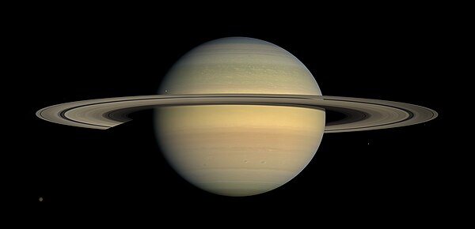
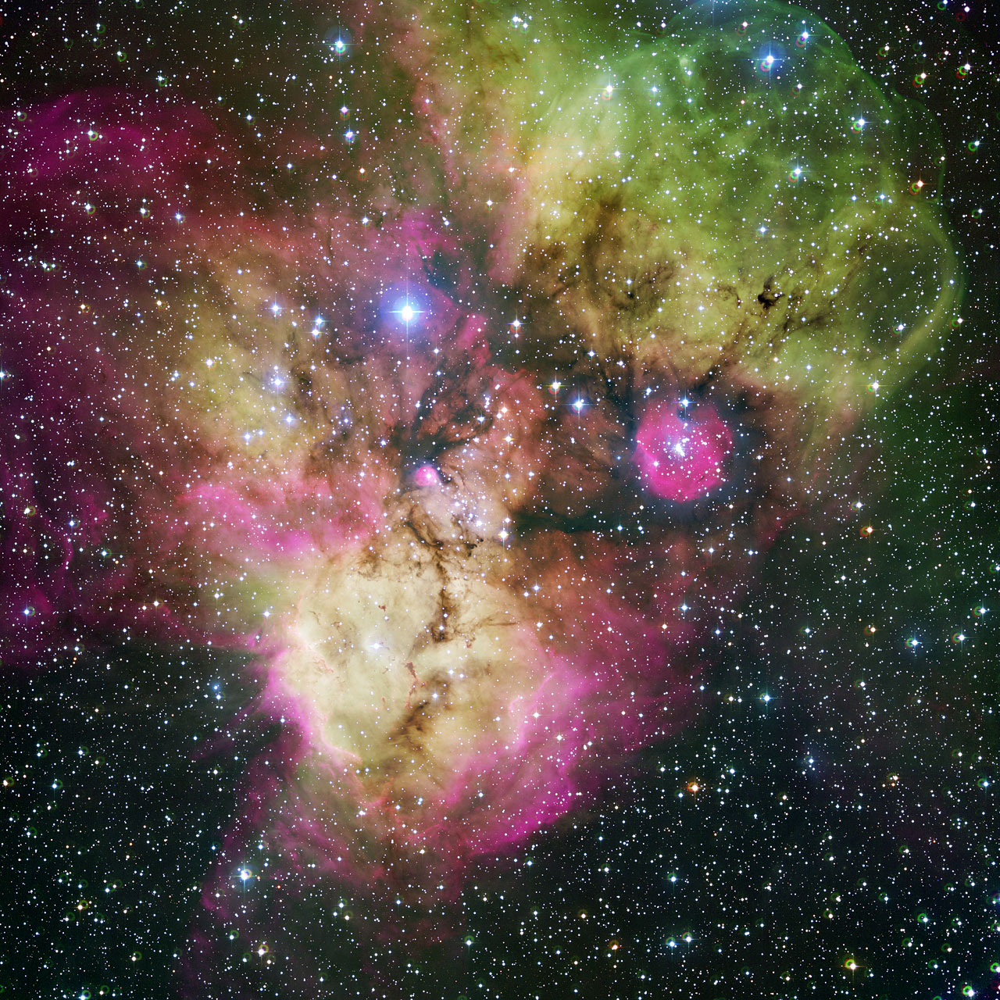
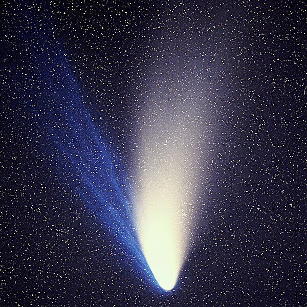
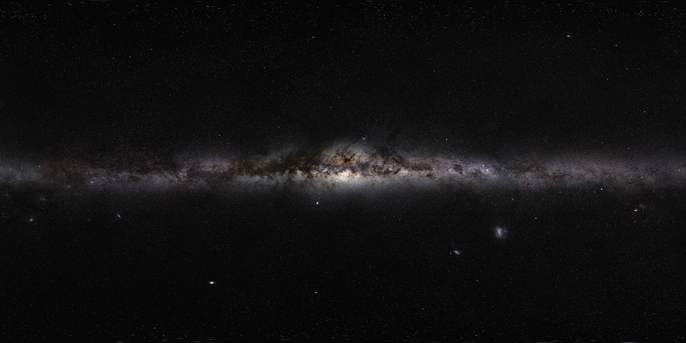

What is Astrophotography?
Astrophotography is the art and science of photographing celestial objects and phenomena. From the craters on the Moon to the swirling arms of distant galaxies, astrophotography lets us capture what the naked eye can barely see. With modern cameras, telescopes, and image-processing software, amateur astronomers are producing images that rival professional observatories from just a few decades ago.
The field spans several categories, each with its own techniques and equipment requirements: planetary imaging, deep-sky photography, widefield Milky Way shots, comet tracking, and time-lapse star trails.
Planetary Imaging
Planets are among the first targets for new astrophotographers. Jupiter, Saturn, and Mars are bright enough to photograph through even a modest telescope. The technique involves capturing thousands of video frames, then stacking the sharpest ones to produce a final image with remarkable detail.
Jupiter reveals its iconic Great Red Spot and cloud bands, while Saturn's rings are a breathtaking sight even through a small telescope. Mars, during opposition, shows its polar ice caps and dark surface features like Syrtis Major.

Deep-Sky Photography
Deep-sky objects — nebulae, galaxies, and star clusters — require long exposures to capture their faint light. A tracking mount that compensates for Earth's rotation is essential, allowing exposures of several minutes without star trails. Images are typically stacked: dozens or even hundreds of individual exposures are combined to reduce noise and reveal fine detail.
The Orion Nebula (M42) is one of the most popular deep-sky targets. Located about 1,344 light-years away, this stellar nursery spans roughly 24 light-years across and is visible to the naked eye as a fuzzy patch in Orion's sword. Long-exposure photographs reveal its vivid colors — reds from hydrogen-alpha emission and blues from reflected starlight.

The Andromeda Galaxy (M31) is another iconic target. At 2.5 million light-years away, it is the nearest large galaxy to the Milky Way and is on a collision course with our galaxy, expected to merge in about 4.5 billion years. Wide-field images reveal its spiral arms, dust lanes, and two satellite galaxies — M32 and M110.
Comets
Comets are among the most dramatic visitors to our night sky. As they approach the Sun, their icy nuclei heat up and release gas and dust, forming a glowing coma and one or more tails that can stretch millions of kilometers across space. The dust tail, pushed by solar radiation pressure, curves gently along the comet's orbit, while the ion tail, swept by the solar wind, always points directly away from the Sun.
Photographing comets requires tracking their motion against the background stars. Short exposures freeze the comet's position but limit detail; longer exposures capture the faint tail structure but may show the comet as a streak. Advanced techniques stack frames aligned on the comet's nucleus, revealing tail detail while keeping the comet sharp.

Star Trails and the Milky Way
Widefield astrophotography captures the grandeur of the night sky without a telescope. A DSLR or mirrorless camera on a tripod is all you need to photograph the Milky Way's core — that bright band of billions of stars stretching across the summer sky. Dark skies far from city lights are essential; light pollution is the biggest obstacle.
Star trail photography takes a different approach: instead of freezing the stars, you let Earth's rotation paint concentric arcs across the frame. Stacking hundreds of short exposures (typically 15-30 seconds each) over several hours produces the classic circular pattern centered on the celestial pole.

Equipment Overview
Getting started with astrophotography doesn't require a massive investment. Here's a breakdown of equipment by category:
| Category | Beginner Setup | Intermediate Setup |
|---|---|---|
| Planetary | 6" Dobsonian + smartphone adapter | 8" SCT + dedicated planetary camera (e.g., ZWO ASI224MC) |
| Deep Sky | DSLR + kit lens + star tracker (e.g., Sky-Watcher Star Adventurer) | Dedicated astro camera + ED refractor + EQ mount (e.g., HEQ5) |
| Widefield / Milky Way | Any camera with manual mode + fast lens (f/2.8 or wider) + tripod | Full-frame mirrorless + 14-24mm f/2.8 + star tracker |
| Comets | DSLR + 200mm lens + tripod | Fast refractor + tracking mount + cooled camera |
| Star Trails | Any camera + intervalometer + sturdy tripod | Same setup + wide-angle lens + foreground composition |
Image Processing
Raw astrophotography frames look nothing like the final images you see online. Processing is where the magic happens. Software like DeepSkyStacker, PixInsight, or Siril handles the stacking phase — aligning and combining dozens of frames to boost signal and reduce noise. Then tools like Photoshop, GIMP, or dedicated astro-processing suites are used for stretching, color calibration, noise reduction, and sharpening.
The key steps in a typical deep-sky processing workflow are: calibration (darks, flats, bias frames), registration (aligning frames), integration (stacking), background extraction, color calibration, histogram stretching, and noise reduction. Each step pulls more detail out of the raw data.
Video: The Night Sky in Motion
Time-lapse videos reveal the motion of the night sky in a way that still images cannot. Watch as the Milky Way rises over a mountain landscape, stars wheel around the celestial pole, and meteors streak across the frame. This short video captures the beauty and scale of the cosmos.
Getting Started Tonight
You don't need to wait for perfect equipment to start. Go outside on a clear night, point your phone at the Moon, and take a photo. Modern smartphone computational photography can produce surprisingly good lunar images. From there, try the Milky Way with a DSLR on a tripod, or hold your phone up to a pair of binoculars to photograph Jupiter's moons. The night sky is always there — you just have to look up.